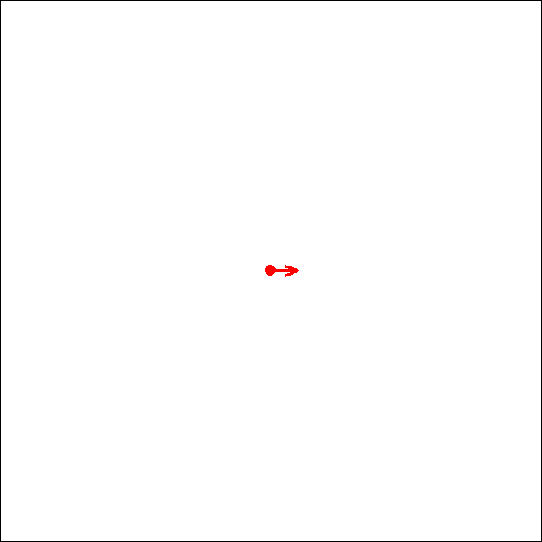

Logo with Gimmicks
Logo
Basic Commands
CLEARSCREEN (CS)
Clear the screen and initializing the field
CS <- function () {
CLEARSCREEN()
}HIDETURTLE (HT)
Don’t show the turtle cursor.
HIDETURTLE <- function () {
LOGO$turtle <- FALSE
record_path(turtle = LOGO$turtle)
}HT <- function () {
HIDETURTLE()
}SHOWTURTLE (ST)
Show the turtle cursor.
SHOWTURTLE <- function () {
LOGO$turtle <- TRUE
record_path(turtle = LOGO$turtle)
}ST <- function () {
SHOWTURTLE()
}FORWARD (FD)
Move forward steps.
FORWARD <- function (step) {
angle <- LOGO$path$rad[LOGO$pos]
x0 <- LOGO$path$x[LOGO$pos]
y0 <- LOGO$path$y[LOGO$pos]
max_step <- 1
if (abs(step) > max_step) {
n_step <- abs(step)%/%(max_step * 1.5) + 1
Seq0 <- seq(from = 0, to = 1, by = 1/n_step)
Seq0 <- Seq0[-1]
steps <- qbeta(Seq0, shape1 = 0.15, shape2 = 0.2)
steps <- steps * step
} else {
steps <- step
}
x1 <- x0 + cos(angle) * steps
y1 <- y0 + sin(angle) * steps
record_path(x = x1, y = y1, path_color = LOGO$path_color)
}FD <- function (step) {
FORWARD(step)
}BACK (BK)
Move back steps.
BACK <- function (steps) {
FORWARD(-steps)
}BK <- function (steps) {
BACK(steps)
}LEFT (LT)
Turn left this many degrees. Negative degrees work too, they’ll turn it right.
LEFT <- function (degs) {
LOGO$heading <- LOGO$heading + degs
LOGO$heading <- LOGO$heading %% 360
record_path(rad = LOGO$heading * pi / 180)
}LT <- function (degs) {
LEFT(degs)
}RIGHT (RT)
Turn right this many degrees.
RIGHT <- function (degs) {
LEFT(-degs)
}RT <- function (degs) {
RIGHT(degs)
}SETHEADING (SH)
Turn to an absolute heading of degrees.
SETHEADING <- function (deg) {
LOGO$heading <- deg
record_path(rad = LOGO$heading * pi / 180)
}SH <- function (deg) {
SETHEADING(deg)
}SETPOS (SP)
Set the position to x, y coordinates. These are Cartesian, so 0,0 is the middle of the screen.
SETPOS <- function (x1, y1) {
record_path(x = x1, y = y1, path_color = "transparent")
}SP <- function (x1, y1) {
SETPOS(x1, y1)
}HOME
Move back to the home position.
HOME <- function () {
SETPOS(x1 = 0, y1 = 0)
}SETPOSX (SPX)
Set the horizontal position to x.
SETPOSX <- function (x1) {
SETPOS(x1, y1 = LOGO$path$y[LOGO$pos])
}SPX <- function (x1) {
SETPOSX(x1)
}SETPOSY (SPY)
Set the vertical position to y.
SETPOSY <- function (y1) {
SETPOS(x1 = LOGO$path$x[LOGO$pos], y1)
}SPY <- function (y1) {
SETPOSY(y1)
}Gimmicks
SETPATHCOLOR (SPC)
SETPATHCOLOR <- function (path_color) {
LOGO$path_color <- path_color
record_path(path_color = LOGO$path_color)
}SPC <- function (path_color) {
SETPATHCOLOR(path_color)
}SETTURTLECOLOR (STC)
SETTURTLECOLOR <- function (turtle_color) {
LOGO$turtle_color <- turtle_color
record_path(turtle_color = LOGO$turtle_color)
}STC <- function (turtle_color) {
SETTURTLECOLOR(turtle_color)
}SETNEWCHUNK (SNC)
SETNEWCHUNK <- function () {
LOGO$chunk <- LOGO$chunk + 1
record_path(chunk = LOGO$chunk)
}SNC <- function () {
SETNEWCHUNK()
}UNDOCHUNK (UNDO)
UNDOCHUNK <- function () {
last_chunk <- max(LOGO$path$chunk)
if (last_chunk > 1) {
LOGO$path <- LOGO$path[LOGO$path$chunk != last_chunk,]
} else {
CLEARSCREEN()
}
LOGO$chunk <- max(LOGO$path$chunk)
LOGO$pos <- nrow(LOGO$path)
LOGO$heading <- LOGO$path$rad[LOGO$pos] * 180 / pi
LOGO$turtle <- LOGO$path$turtle[LOGO$pos]
LOGO$turtle_color <- LOGO$path$turtle_color[LOGO$pos]
last_pos <- LOGO$pos
while (LOGO$path$path_color[last_pos] == "transparent" && last_pos > 0) {
last_pos <- last_pos - 1
}
if (last_pos == 0) {
LOGO$path_color <- "blue"
} else {
LOGO$path_color <- LOGO$path$path_color[last_pos]
}
REPLOT()
}UNDO <- function () {
UNDOCHUNK()
}SETSPEED (SPEED)
SPEED <- function (speed) {
SETSPEED(speed)
}REPLOT
REPLOT <- function (chunk = FALSE) {
PLOT(chunk)
}SAVEPATH (SAVE)
SAVE <- function (name) {
SAVESCREEN(name)
}QUITLOGO (QUIT)
QUIT <- function () {
QUITLOGO()
}Parsing Prompts
Clean strings
Analyzing and splitting Code
breakup_String <- function(String) {
cl_String <- clean_prompt(String)
split_String <- strsplit(cl_String, " ")[[1]]
df <- data.frame(Code = split_String)
n_func <- 0
df$ID_Func <- rep(0, nrow(df))
n_par <- 0
df$ID_Par <- rep(0, nrow(df))
ID <- 1
df$ID_Repeat <- rep(0, nrow(df))
brakets <- data.frame(ID = ID,
Status = TRUE,
n = 1)
level <- brakets$ID[max(which(brakets$Status == TRUE))]
df$n_Repeat <- rep(1, nrow(df))
is_par_braket <- FALSE
i <- 1
imax <- nrow(df) + 1
while ( i < imax ) {
if (df$Code[i] == "[") {
n_par <- n_par + 1
is_par_braket <- TRUE
i <- i + 1
next
}
if (is_par_braket) {
if (df$Code[i] == "]") {
is_par_braket <- FALSE
i <- i + 1
next
}
if ( !grepl("[A-Za-z]", df$Code[i])) {
df$ID_Func[i] <- n_func
df$ID_Par[i] <- n_par
df$ID_Repeat[i] <- brakets$ID[brakets$ID == level]
df$n_Repeat[i] <- brakets$n[brakets$ID == level]
i <- i + 1
next
} else {
inLower <- tolower(df$Code[i])
if (inLower == "n") {
df$Code[i] <- paste0("(",inLower,")")
} else if (inLower %in% colors()) {
df$Code[i] <- paste0("'",inLower,"'")
} else if (exists(inLower)) {
df$Code[i] <- inLower
} else {
df$Code[i] <- paste0("'",df$Code[i],"'")
}
df$ID_Func[i] <- n_func
df$ID_Par[i] <- n_par
df$ID_Repeat[i] <- brakets$ID[brakets$ID == level]
df$n_Repeat[i] <- brakets$n[brakets$ID == level]
i <- i + 1
next
}
} else {
if (df$Code[i] == "]") {
brakets$Status[brakets$ID == level] <- FALSE
level <- brakets$ID[max(which(brakets$Status == TRUE))]
i <- i + 1
next
}
if ( !grepl("[A-Za-z]", df$Code[i]) ) {
n_par <- n_par + 1
df$ID_Func[i] <- n_func
df$ID_Par[i] <- n_par
df$ID_Repeat[i] <- brakets$ID[brakets$ID == level]
df$n_Repeat[i] <- brakets$n[brakets$ID == level]
i <- i + 1
next
} else {
inCaps <- toupper(df$Code[i])
is_LOGO_func <- exists(inCaps) && is.function(get(inCaps))
if (is_LOGO_func) {
n_func <- n_func + 1
df$Code[i] <- inCaps
}
is_repeat <- inCaps == "REPEAT"
if (is_repeat) {
n_func <- n_func + 1
ID <- ID + 1
i = i + 2
df$Code[i] <- inCaps
brakets <- rbind(brakets,
data.frame(ID = ID,
Status = TRUE,
n = round(as.numeric(df$Code[i - 1]))))
level <- brakets$ID[max(which(brakets$Status == TRUE))]
}
df$ID_Func[i] <- n_func
df$ID_Repeat[i] <- brakets$ID[brakets$ID == level]
df$n_Repeat[i] <- brakets$n[brakets$ID == level]
i <- i + 1
next
}
}
}
return(df[df$ID_Func != 0,])
}CodeLine <- "CS repeat 2 [fd [-pi/n]] sPc [black]"
cl_splited <-breakup_String(CodeLine)
cl_splited Code ID_Func ID_Par ID_Repeat n_Repeat
1 CS 1 0 1 1
4 REPEAT 2 0 2 2
5 FD 3 0 2 2
7 - 3 1 2 2
8 pi 3 1 2 2
9 / 3 1 2 2
10 (n) 3 1 2 2
13 SPC 4 0 1 1
15 'black' 4 2 1 1Create Calls
create_Calls <- function (splited) {
Calls <- splited %>%
group_by(ID_Func, ID_Par) %>%
mutate(Func_Par = ifelse(ID_Par > 0,1,0),
Code = ifelse(first(ID_Par) > 0,
paste0(Code, collapse = ""),
Code)) %>%
ungroup() %>%
distinct(Code, ID_Func, ID_Par, Func_Par, .keep_all = TRUE) %>%
group_by(ID_Func, Func_Par) %>%
mutate(Code = ifelse(first(Func_Par) > 0,
paste0(Code, collapse = ", "),
Code)) %>%
ungroup() %>%
distinct(Code, ID_Func, Func_Par, .keep_all = TRUE) %>%
group_by(ID_Func) %>%
mutate(Code = ifelse(n() > 1,
paste0(Code, collapse = "("),
paste0(Code, "(")),
Code = paste0(Code, ")")) %>%
ungroup() %>%
distinct(Code, ID_Func, .keep_all = TRUE) %>%
rename(Call = Code, ID = ID_Repeat, n = n_Repeat ) %>%
select(Call,ID, n)
if ( !any(grepl("^UN|SPEED|SAVE|QUIT", Calls$Call)) ) {
first_call <- data.frame(Call = "SETNEWCHUNK()", ID = 1, n = 1)
last_call <- data.frame(Call = "PLOT()", ID = 1, n = 1)
Calls <- rbind(first_call, Calls, last_call)
}
Calls
}Callshort <- create_Calls(cl_splited)
Callshort Call ID n
1 SETNEWCHUNK() 1 1
2 CS() 1 1
3 REPEAT() 2 2
4 FD(-pi/(n)) 2 2
5 SPC('black') 1 1
6 PLOT() 1 1Expand Repeats
expand_Repeats <- function (Calls) {
IDmax <- max(Calls$ID)
if (IDmax == 1) {
return(as.vector(Calls$Call))
}
while (IDmax > 1){
dfm <- data.frame(
Call = character(),
ID = integer(),
n = integer(),
stringsAsFactors = FALSE
)
rID <- range(which(Calls$ID == IDmax))
n <- Calls$n[rID[1]]
middle <- (rID[1] + 1):rID[2]
for (i in 1:n) {
dfm_sub <- Calls[middle, ] %>%
mutate(Call = gsub("\\(n\\)", i, Call))
dfm <- rbind(dfm,dfm_sub)
}
dfm$ID <- Calls$ID[rID[1]-1]
dfm$n <- Calls$n[rID[1]-1]
before <- 1:(rID[1] - 1)
dfb <- Calls[before, ]
after <- (rID[2] + 1):nrow(Calls)
dfa <- Calls[after, ]
Calls <- rbind(dfb,dfm,dfa)
IDmax <- max(Calls$ID)
}
return(as.vector(Calls$Call[Calls$Call != ""]))
}Calls <- expand_Repeats(Callshort)
Calls[1] "SETNEWCHUNK()" "CS()" "FD(-pi/1)" "FD(-pi/2)"
[5] "SPC('black')" "PLOT()" Run Calls
run_prompt <- function (Prompt) {
Prompt_splited <- breakup_String(Prompt)
Callshort <- create_Calls(Prompt_splited)
Calls <- expand_Repeats(Callshort)
for (i in 1:length(Calls)){
eval(parse(text = as.character(Calls[i])))
}
}Helper Functions
New field
Initializing the game
new_field <- function (size) {
dir_path <- here("LOGO", "temp")
chunk <- 1
pos <- 2
heading <- 0
turtle <- TRUE
turtle_color <- "red"
path_color <- "blue"
speed <- 50
path <- data.frame(
chunk = rep(1, pos),
x = rep(0, pos),
y = rep(0, pos),
rad = rep(0, pos),
path_color = rep("transparent", pos),
turtle = c(FALSE, rep(turtle, pos - 1)),
turtle_color = rep(turtle_color, pos),
stringsAsFactors = FALSE
)
LOGO$field_name = "LOGO"
LOGO$field_dir = here()
LOGO$size = abs(size)
LOGO$chunk = chunk
LOGO$pos = pos
LOGO$heading = heading
LOGO$turtle = turtle
LOGO$turtle_color = turtle_color
LOGO$path_color = path_color
LOGO$speed = speed
LOGO$path = path
}Record Path
record_path <- function (chunk = NULL,
x = NULL,
y = NULL,
rad = NULL,
path_color = NULL,
turtle = NULL,
turtle_color = NULL) {
n <- max(length(x),1)
template <- LOGO$path[LOGO$pos, ]
if (n > 1) {
newrows <- template[rep(1,n), ]
new_pos <- LOGO$pos + (1:n)
} else {
newrows <- template
new_pos <- LOGO$pos + 1
}
if (!is.null(chunk)) newrows$chunk <- chunk
if (!is.null(x)) newrows$x <- x
if (!is.null(y)) newrows$y <- y
if (!is.null(rad)) newrows$rad <- rad
if (!is.null(path_color)) newrows$path_color <- path_color
if (!is.null(turtle)) newrows$turtle <- turtle
if (!is.null(turtle_color)) newrows$turtle_color <- turtle_color
LOGO$path[new_pos,] <- newrows
LOGO$pos <- nrow(LOGO$path)
}Plot Functions
Field
plot_field <- function (stat) {
maxpath <- ceiling(max(abs(LOGO$path[1:stat,c("x","y")])) * 1.11)
LOGO$size <- max(c(LOGO$size, maxpath), na.rm = TRUE)
par(mar = c(0, 0, 0, 0),
xaxs = "i", yaxs = "i")
plot.new()
plot.window(xlim = c(-LOGO$size, LOGO$size),
ylim = c(-LOGO$size, LOGO$size),
asp = 1)
box()
}Path
plot_path <- function (stat) {
if (stat > 1) {
path_stat <- LOGO$path[1:stat,]
segments(x0 = path_stat$x[-stat],
y0 = path_stat$y[-stat],
x1 = path_stat$x[-1],
y1 = path_stat$y[-1],
col = path_stat$path_color[-1],
lwd = 2)
}
}Turtle
plot_turtle <- function (stat) {
show <- LOGO$path$turtle[stat]
if (show) {
pos_x <- LOGO$path$x[stat]
pos_y <- LOGO$path$y[stat]
symbols(x = pos_x,
y = pos_y,
circles = 0.02 * LOGO$size,
inches = FALSE,
fg = NA,
bg = LOGO$path$turtle_color[stat],
add = TRUE)
arrow_length <- 0.1 * LOGO$size
angle <- LOGO$path$rad[stat]
arrows(pos_x,
pos_y,
pos_x + cos(angle) * arrow_length,
pos_y + sin(angle) * arrow_length,
col = LOGO$path$turtle_color[stat],
code = 2,
length = 0.1,
angle = 20,
lwd = 2)
}
}Stat
PLOT (Animation)
PLOT <- function (chunk = TRUE) {
invisible(NULL)
if (chunk) {
Range <- range(which(LOGO$path$chunk == max(LOGO$chunk)))
rmin <- max(2,Range[1])
rmax <- Range[2]
} else {
rmin <- 2
rmax <- nrow(LOGO$path)
}
step <- LOGO$speed/(rmax-rmin)
step <- pmin(pmax(step, 1/200), 1)
Seq0 <- seq(from = 0, to = 1, by = step)
plot_seq <- qbeta(Seq0, shape1 = 0.15, shape2 = 0.2)
plot_seq <- (rmax - rmin) * plot_seq + rmin
plot_seq <- round(plot_seq)
plot_seq <- unique(plot_seq)
img_list <- lapply(plot_seq, function(i) plot_stat(i))
Logo_Output <- image_animate(image_join(img_list),
fps = 10, loop = 1,
optimize = TRUE)
gif_path <- file.path(tempdir(), "Logo_Output.gif")
image_write(Logo_Output, path = gif_path)
print(Logo_Output)
}Application
Run Game
Example from the homepage
with some fancy shadow and color effects
run_LOGO("CS SP [-pi/5] [-Sin(PI/2)/2] sPc [black]")
run_LOGO("REPEAT 20 [RepeaT 180 [FD 1 RT 2] RT 18]")
run_LOGO("SPEED 100")
run_LOGO("Home SpC [gREEN] StC [blue]")
run_LOGO("REPEaT 20.1 [rEPEAT 180 [fD 1 RT 2] RT 18]")
run_LOGO("UndoChunk")
run_LOGO("SpC [blue] StC [green]")
run_LOGO("REPEaT 5 [rEPEAT 180 [fD 1 RT 2] RT 72]")
run_LOGO("SpC [green] StC [red] rt 18")
run_LOGO("REPEaT 5 [rEPEAT 180 [fD 1 RT 2] RT 72]")
run_LOGO("SpC [yellow] rt 18")
run_LOGO("REPEaT 5 [rEPEAT 180 [fD 1 RT 2] RT 72]")
run_LOGO("SpC [red] rt 18 ht")
run_LOGO("REPEaT 5 [rEPEAT 360 [fD 0.5 RT 1] RT 72]")Saved Output
you can also save the output (Plot) for showing it around later
run_LOGO("SPEED 1 saVe [Logo01]")
Other Exercises
Since n is also used as a loop variable in my program, handling many other exercises doesn’t pose any issues.
https://softwareprogramming4kids.com/loops-in-logo/
Exercise 1:
run_LOGO("CS")
run_LOGO("REPEAT 80 [FD [N*2] RT 90]")
run_LOGO("undo")
run_LOGO("REPEAT 80 [FD [N*2^(N/40)] RT 90]")run_LOGO("SPEED 1 saVe [Logo02]")
Exercise 2:
run_LOGO("CS REPEAT 50 [ FD [n * 5] RIGHT 144 ]")run_LOGO("SPEED 1 saVe [Logo03]")
Exercise 3:
run_LOGO("CS REPEAT 150 [ FD [n * 2] RT 91 ]")run_LOGO("SPEED 1 saVe [Logo04]")
Quit LOGO
run_LOGO("QUIT")Testing Back
run_LOGO("CS")# A tibble: 1 × 7
format width height colorspace matte filesize density
<chr> <int> <int> <chr> <lgl> <int> <chr>
1 gif 600 600 sRGB FALSE 0 59x59 run_LOGO("SPEED 1")
run_LOGO("FD 200 lt 90 fd 50 lt 90")# A tibble: 82 × 7
format width height colorspace matte filesize density
<chr> <int> <int> <chr> <lgl> <int> <chr>
1 gif 600 600 sRGB FALSE 0 59x59
2 gif 1 1 sRGB TRUE 0 59x59
3 gif 1 1 sRGB TRUE 0 59x59
4 gif 1 1 sRGB TRUE 0 59x59
5 gif 1 1 sRGB TRUE 0 59x59
6 gif 39 13 sRGB FALSE 0 59x59
7 gif 1 1 sRGB TRUE 0 59x59
8 gif 1 1 sRGB TRUE 0 59x59
9 gif 1 1 sRGB TRUE 0 59x59
10 gif 1 1 sRGB TRUE 0 59x59
# ℹ 72 more rowsrun_LOGO("FD 400 ")# A tibble: 102 × 7
format width height colorspace matte filesize density
<chr> <int> <int> <chr> <lgl> <int> <chr>
1 gif 600 600 sRGB FALSE 0 59x59
2 gif 1 1 sRGB TRUE 0 59x59
3 gif 1 1 sRGB TRUE 0 59x59
4 gif 1 1 sRGB TRUE 0 59x59
5 gif 1 1 sRGB TRUE 0 59x59
6 gif 1 1 sRGB TRUE 0 59x59
7 gif 1 1 sRGB TRUE 0 59x59
8 gif 1 1 sRGB TRUE 0 59x59
9 gif 1 1 sRGB TRUE 0 59x59
10 gif 1 1 sRGB TRUE 0 59x59
# ℹ 92 more rowsrun_LOGO("rt 90 fd 50 lt 90")# A tibble: 18 × 7
format width height colorspace matte filesize density
<chr> <int> <int> <chr> <lgl> <int> <chr>
1 gif 600 600 sRGB FALSE 0 59x59
2 gif 38 38 sRGB FALSE 0 59x59
3 gif 1 1 sRGB TRUE 0 59x59
4 gif 1 1 sRGB TRUE 0 59x59
5 gif 1 1 sRGB TRUE 0 59x59
6 gif 1 1 sRGB TRUE 0 59x59
7 gif 1 1 sRGB TRUE 0 59x59
8 gif 14 38 sRGB FALSE 0 59x59
9 gif 14 44 sRGB FALSE 0 59x59
10 gif 14 52 sRGB FALSE 0 59x59
11 gif 14 64 sRGB FALSE 0 59x59
12 gif 14 49 sRGB FALSE 0 59x59
13 gif 14 41 sRGB FALSE 0 59x59
14 gif 14 38 sRGB FALSE 0 59x59
15 gif 1 1 sRGB TRUE 0 59x59
16 gif 1 1 sRGB TRUE 0 59x59
17 gif 1 1 sRGB TRUE 0 59x59
18 gif 38 38 sRGB FALSE 0 59x59 run_LOGO("bk 400")# A tibble: 102 × 7
format width height colorspace matte filesize density
<chr> <int> <int> <chr> <lgl> <int> <chr>
1 gif 600 600 sRGB FALSE 0 59x59
2 gif 1 1 sRGB TRUE 0 59x59
3 gif 1 1 sRGB TRUE 0 59x59
4 gif 1 1 sRGB TRUE 0 59x59
5 gif 1 1 sRGB TRUE 0 59x59
6 gif 1 1 sRGB TRUE 0 59x59
7 gif 1 1 sRGB TRUE 0 59x59
8 gif 1 1 sRGB TRUE 0 59x59
9 gif 1 1 sRGB TRUE 0 59x59
10 gif 1 1 sRGB TRUE 0 59x59
# ℹ 92 more rows